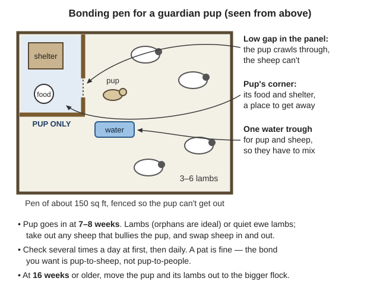
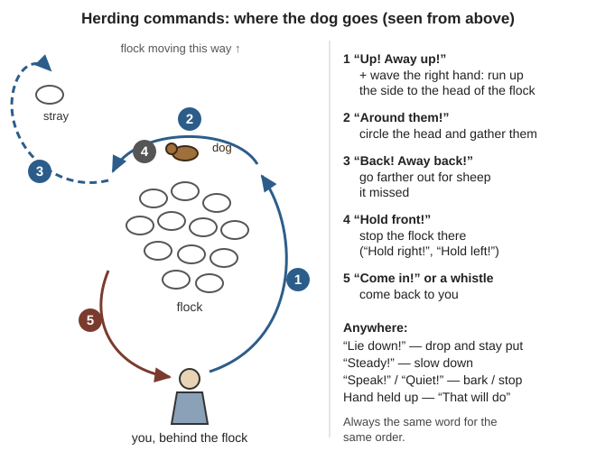
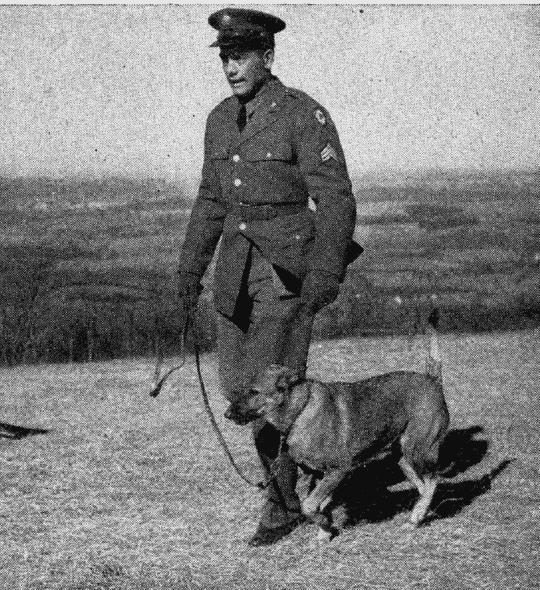
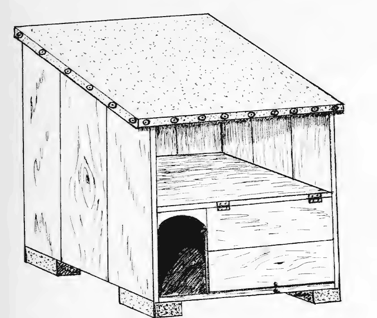
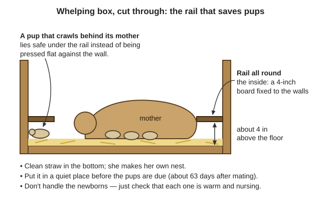
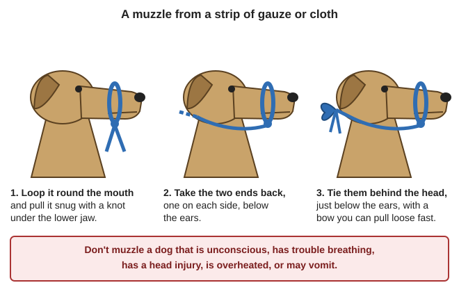

Guides › Animals · Emergency · Index A–Z
How to keep working dogs with no store, no vet and no kibble: livestock guardian dogs against coyotes, bears and cougars, herding dogs, bird dogs and the Oregon law on hunting with dogs, watchdogs, feeding on meat, grain and scraps, the fish and foods that kill dogs, kennels, breeding and puppies, vaccines, first aid, humane training and a humane end. The dog books are in Southern-Oregon\Animals\Dogs: the Army's War Dogs manual (TM 10-396, 1943) and Military Working Dogs (FM 3-19.17, 2005), Wickham's 1891 shepherd-dog manual, Miller's 1919 American Hunting Dog and a parvovirus sheet. The guardian-dog and predator books are in Animals\Planning-Predators-Toxic-Plants, no-vet medicine and euthanasia in Animals\Veterinary, and the hunting and trapping law in Hunting and Trapping. Old dog books are full of poisons and beatings; this guide keeps their good parts and lists the rest under "Old advice in the library to ignore".
The short version
- Never let a dog eat raw salmon, steelhead or trout. Salmon poisoning kills most dogs that aren't treated. Cook all fish, meat and offal before dogs get it — raw offal also spreads tapeworm cysts to people (ODFW, p. 34; FDA, p. 156; Zoonoses, p. 119).
- Vaccinate now, while vets exist: parvo from 6–8 weeks, repeated every 3–4 weeks to 16 weeks, a booster at 1 year, then every 3 years; and rabies. Parvo lives in soil for up to 7 months (parvo sheet, pp. 3–4; No Animal Doctor, p. 272).
- Raise a guardian pup with the stock from 7–8 weeks, not in the house. Where bears and cougars live, plan 1–2 dogs per 50 ewes or does — and still shut the stock in at night: cougars kill dogs (USDA AIB 588, pp. 12, 29; Texas A&M, p. 6).
- Llamas and donkeys don't stop cougars or bears (UC ANR 8598, p. 5).
- Oregon law: no dogs on any game mammal except western gray squirrel, and none on bear or cougar. Bird dogs are legal, and so are hounds on raccoon, bobcat and fox in their seasons (ODFW, p. 21; furbearer regs, p. 6).
- Train with praise, patience and timing. "A dog never is slapped with the hand or struck with the leash" (TM 10-396, p. 60).
- No food for 2 hours before or after hard work, and feed big dogs twice a day — bloat kills fast (FM 3-19.17, p. 67).
- Food is the real cost: a 50-lb working dog eats about 1½ lb of meat a day, roughly 550 lb a year, plus grain (TM 10-396, p. 41; arithmetic). Keep only the dogs that earn it.
| Job | Kind of dog | What to expect |
|---|---|---|
| Guard stock day and night | Livestock guardian dog | Lives with the stock and acts on its own: "not a herding dog but rather a full-time member of the flock" (AIB 588, p. 6) |
| Move stock | Herding dog: collie, border collie, Australian shepherd | Moves sheep by "biting, chasing, or barking" to voice and hand signals; "generally not left alone with the sheep" (AIB 588, p. 7) |
| Birds for the pot | Gun dog: pointers, setters, spaniels, retrievers | Finds, flushes and fetches; see the law below |
| Warning | Any alert dog in the house and yard | "One of the best security measures" (WSDA, p. 1) |
Don't ask one dog to do every job. Breeds that hunt or herd "rarely become effective" guardians (Texas A&M, p. 5), and "the working dog should not be allowed to hunt" — a sheep dog that chases rabbits is gone when you need it (Wickham, p. 91).
A guardian dog "stays with sheep without harming them and aggressively repels predators", because it was raised with them from puppyhood (AIB 588, p. 6); it works for goats, cattle and pigs too (p. 5).
| Breed | What the books say |
|---|---|
| Great Pyrenees | Most common (57% of 763 dogs surveyed); matures earliest; hurts stock least; 83% of yearlings rated good (AIB 588, pp. 7, 9). Gentlest with people, but the long coat needs grooming in heat (Texas A&M, p. 5) |
| Anatolian Shepherd | Matures slowly (18–30 months); only 38% of yearlings rated good, mostly for hurting sheep (AIB 588, pp. 7, 9) |
| Akbash, Maremma, Karakachan | Akbash: "one of the most aggressive and protective"; Maremma and Karakachan stay close to the herd (Texas A&M, p. 5) |
| Komondor | Corded coat collects burrs, so most owners clip it each spring. Bit people most: 17%, against 4% of Pyrenees (AIB 588, p. 24) |
| Kuvasz, Shar Planinetz, Kangal, mixed-breed | Also used (AIB 588, pp. 8–9; UC ANR 8598, p. 5). Navajo shepherds' mongrels succeed through "the manner in which they are reared" (AIB 588, p. 9) |
Choosing a pup: buy from someone who knows the dogs, from working lines, not pet lines (AIB 588, p. 9; UC ANR 8598, p. 5). Pick one that is self-confident and alert, not timid, and barks from suspicion, not fear; good guardians show it by 3–8 months. Male or female makes no difference (AIB 588, p. 10). Be patient: "it takes 18 to 24 months for puppies to become effective guardians" (Texas A&M, p. 2), and no training "will guarantee that a dog will become a good guardian" (AIB 588, p. 5).
Here in the valley: a matted coat "may lead to serious skin infections", especially in moist climates; comb out mats and burrs around the toes and ears, or clip (AIB 588, pp. 24–25). With our wet winters and hot summers, clip long-coated guardians in late spring (rule of thumb).
Bonding begins at about 3 weeks, peaks at 6–8 weeks and levels off by 12; after 12 weeks it "may never be satisfactorily achieved" (AIB 588, p. 13). Texas A&M sets the limit at 16 weeks: "Do not bring the puppy into your home to socialize it" (p. 3).

The pup can reach its own corner, the lambs can't, and the water makes them mix (AIB 588, p. 13; a diagram drawn for this guide).Keep guardian and herding dogs from playing together (AIB 588, p. 18); loose farm pets teach a guardian pup bad habits (p. 19). Some lessons take up to a year to show (p. 21).
| Predator | What a guardian does |
|---|---|
| Coyotes, foxes | Usually keep away; 95% of surveyed guardians were aggressive to predators (AIB 588, p. 28) |
| Stray dogs | Usually leave — but young guardians may stand by, and some have joined them in killing sheep (same page). Dogs cause about 21% of predator losses of grown sheep (UC ANR 8598, p. 2) |
| Black bear | The dog barks and closes in; the bear usually retreats, and the dog chases it off and comes back (AIB 588, pp. 28–29) |
| Cougar | "Cougars are known predators of dogs and might not avoid contact with the dog" (AIB 588, p. 29) |
| Wolf | Hard to predict (AIB 588, p. 28); it is not legal to kill a wolf even when it attacks your dog (furbearer regs, p. 9) |
UC ANR rates guardian dogs "highly effective" even against mountain lions (p. 5), but a lone dog can lose to a cougar, and cougars live throughout Oregon (ODFW cougar, p. 2). So run guardians in pairs and pen the stock near the house at night — night pens rate highly effective against lions and bears (UC ANR 8598, p. 5). "Move them to sheds or barns at night"; Oregon law lets a landowner kill a cougar that is damaging livestock (ODFW cougar, p. 2).
What they can't do:
What kills guardians: 32% of the USDA's working dogs died young — vehicles 23%, shot on purpose 23%, illness 18%, accidents 9% (AIB 588, pp. 25–26). Only 52% live to age 6, and 57% of deaths happen off the property (Texas A&M, p. 4). Watch for poison baits, rat poison, traps and snares (AIB 588, p. 26).
Llamas and donkeys deter dogs, coyotes and foxes "but not wolves, bears, or mountain lions"; they are "prey animals" themselves (UC ANR 8598, pp. 5–7). They "will sometimes protect sheep" (Raising Healthy Sheep, p. 133) — not enough where cougars and bears hunt.
Fence respect "is the most important lesson an LGD can learn" (Texas A&M, p. 4).
The fence (UC ANR 8598, p. 8): a coyote squeezes through a 4 × 6 in gap in woven wire and climbs or jumps fences under 66 in, so add an electric top wire and a "trip wire" low on the outside. Electric netting cut coyote entries from 47% to 6%; energizers can run on solar-charged batteries. Electric fences fail on dry soil, poor grounding and weeds on the wire — a summer problem here. Against bears: at least 3 wires (5–6 better), lowest 7–9 in, highest 36–42 in, 8–10 in apart, energizer at least 6,000 V and 0.5 J (ODFW bear country, p. 2).
Neighbors: a collar tag saying it is a livestock guardian, signs by the road, and a word with the neighbors (Texas A&M, p. 2). Many counties hold owners responsible "for damage done by roaming dogs" (AIB 588, p. 24).
Sheep learn to ignore a quiet guardian but "will bunch and run from a dog that chases them" (AIB 588, p. 19); a herding dog uses that. Get a pup from a working strain; color doesn't matter (Wickham, p. 115). Wickham's rules: kindness and patience; one thing at a time; one short word per order, always the same; show the dog what you want; never punish it for what it doesn't understand (pp. 76–77).
Yard lessons in a quiet place (Wickham, pp. 77–81):
Out with the sheep (Wickham, pp. 85–92): only once "Come in!" works every time. For a week just drive the sheep to one place saying "Hie on!". Teach hand signals — at a distance and in wind it sees what it can't hear. Don't send it round the flock until it is fast enough to circle them — 7–8 months for some, a year for others; a slow dog runs straight at them. Over-eagerness "must be checked, but not by whipping". "If the shepherd treats the sheep with gentleness, and does not allow the dog to bite them, he will be a protector of the flock" (p. 85). Train on cattle first if it must work both (p. 91). A full course takes two years; half of it by one year is good progress (p. 92).

Where the dog goes for each command; use the same word every time (Wickham, pp. 85–90; a diagram drawn for this guide).The law (check each year's rules):
So in Oregon a hunting dog is a bird dog: pointers and setters point, spaniels flush, retrievers fetch. Quail in the open want a wide-ranging dog; grouse in the woods "a close, careful dog", quiet and "cat-like" (Miller, p. 160; p. 166). For ducks in cold water, a Chesapeake or Irish water spaniel (p. 173); double-coated dogs like the griffon stand icy water and wet brush (p. 81).
Training a bird dog (Miller's lessons, without his spiked "force collar"):
In the field: in trapping season keep the dog close and carry wire cutters for snares; keep it close where there is wolf sign; keep it from stagnant water and fish carcasses (ODFW game birds, p. 34).
The Army's 1943 manual rests training on knowing how a dog's mind works, "constant repetition", "suitable recognition of a dog's progress" and "patience" (TM 10-396, p. 58). Keep that, but use a wide flat collar or harness instead of its choke chain and throwing chain (p. 63), and guide with hands and voice, not jerks. Gear: a 6-ft leash and a 25-ft long line (same page).
The rules (TM 10-396, pp. 59–61, 66):
| Command | What the dog does | How to teach it gently |
|---|---|---|
| Heel | Walks on your left, shoulder by your knee, leash slack (p. 67) | Say "Heel" and walk briskly. A steady pull only makes a dog brace (p. 69): when it pulls, stop or turn away, and praise it the moment it is back (our change from the manual's jerks) |
| Sit | Sits at once (p. 69) | Leash in the right hand; press the hindquarters gently down with the left; praise (p. 70) |
| Down | Lies down at the word and a downward sweep of the arm (p. 72) | From a sit, ease the front legs forward (Wickham, pp. 78–79); praise. A "depressing exercise" — few in a row (TM 10-396, p. 73) |
| Stay | Holds its place until you return (p. 74) | Start in the down; back away slowly saying "Stay", walk back around it, praise; build up time and distance (pp. 74–76) |
| Come | Comes and sits facing you (p. 77) | Name, then "Come", a light tug; then the long line: let it sniff, call, praise on arrival, release with "OK". It is "praised, never punished — even if he has been pulled on the leash for the entire distance" (pp. 77–78) |
| Riding; gunfire | Rides quietly; doesn't flinch | Rides of 5, then 10 minutes, on an empty stomach if carsick (pp. 89–90). Shots at a distance while it eats, closer over days; stop if it shows alarm (p. 90) |

Heel: dog on your left, shoulder by your knee, leash hanging loose (TM 10-396, p. 67)."Without strong fences losses from sheep-killing dogs can be heavy" (FB 2222, p. 7).
"To a great extent, the dog is able to digest and utilize the same foods as man"; the Army fed meat, grain and "good mess scraps" (TM 10-396, pp. 37, 40):
How much: "a dog's main meal should consist of 1½ pounds of meat to each 50 pounds of body weight, depending upon the size of the dog and the amount of work he is required to do" (TM 10-396, p. 41). Grown guardians eat 2–4 lb of dry dog food a day (AIB 588, p. 25). Weigh monthly (FM 3-19.17, p. 59); you should feel the ribs but not see them (rule of thumb). By that rule a 25-lb dog needs about ¾ lb of meat a day (275 lb a year), a 50-lb dog 1½ lb (550 lb), a 100-lb guardian 3 lb (1,100 lb) — plus as much again in grain and vegetables (arithmetic).
Dog cake that keeps: Miller's kennels boiled cornmeal, wheat bran and meat scraps soft and baked them in pans "the harder the better" — two half-pound cakes a day per hunting dog (Miller, pp. 149–150). Pick out the bones, bake it dry, store it sealed (rule of thumb).
Puppies: 5 small meals a day at 2 months, 4 at 3 months, 3 from 6 to 18 months, then 2 — milk, broth, oatmeal, dried bread, scraps and a little chopped meat, never old or smelly meat (Miller, pp. 115–117).
Rules:
Salmon poisoning disease. "Don't let your dog eat raw salmon." Signs: a high fever 5–7 days after eating fish, no appetite, dullness, dehydration, vomiting, watery or bloody diarrhea; "most dogs die if left untreated", and the cure takes antibiotics, a wormer and IV fluids. Cook fish thoroughly or freeze it at −4 °F for 24 hours (ODFW, p. 34). The fluke that carries it lives in fish from the coastal streams of Oregon, Washington and northern California; salmon, trout and steelhead carry the most, and home-smoked fish counts as undercooked: cook to 145 °F inside (FDA, p. 156; Neorickettsia helminthoeca). The Illinois and the Rogue carry salmon and steelhead: keep dogs from fish cleaning, gut buckets and carcasses on the gravel bars (rule of thumb).
Raw meat and offal. Dogs are the main host of the hydatid tapeworm; its eggs in dog droppings grow cysts in sheep, cattle and people, especially children (Zoonoses, p. 117). "Never feed raw meat to dogs. Instead, burn the offal of slaughtered animals" (No Animal Doctor, p. 360); "we must fully cook all meat products fed to dogs" (Zoonoses, p. 119). Raw rabbit passes tapeworm too (Peace Corps Vol 4, p. 340). Pork and wild game carry trichinosis: cook until all parts reach 77 °C (170 °F) or turn from pink to gray (Zoonoses, p. 121).
| Don't feed or leave within reach | Why |
|---|---|
| Moldy bread, old or smelly meat | Spoiled food sickens dogs (TM 10-396, p. 38; Miller, p. 117) |
| Cooked bones, chicken leg bones, small bones | Splinters cut or block the gut (TM 10-396, p. 39; Miller, p. 116) |
| Chocolate; grapes and raisins; onions; macadamia nuts; sugar-free gum (xylitol) | Poisonous to dogs (Theobromine poisoning; Grape toxicity in dogs; Onion; Macadamia; Xylitol) — no book on the drive covers these |
| Antifreeze, insecticides, weed killers, rat poison | Common dog poisons (FM 3-19.17, p. 65; AIB 588, p. 26; Ethylene glycol poisoning) |
| Wild mushrooms | Dogs often eat fly agaric and panther caps, which can kill dogs though rarely people (NAMA, p. 3) |
| Black walnut (nuts, shavings) | Can poison dogs and horses (WSU, p. 27) |
If a dog ate poison (FM 3-19.17, p. 65): treat only if you are sure; keep the container. Vomiting "is not recommended in all types of poisoning"; when it is right, the Army gives ¼–½ cup of hydrogen peroxide. That amount is for a full-grown Army working dog, a big shepherd-type dog: never give a small dog or a pup that much, and use only ordinary 3% drugstore peroxide, never a stronger kind (rule of thumb). Not if it swallowed something caustic, petroleum or sharp, or is already drowsy or shaking (rule of thumb). Never salt water (see the old-advice table). Keep it quiet and warm.
Water: clean and fresh, always (TM 10-396, p. 41); after hard work only 3 in in the bucket for the first hour (FM 3-19.17, p. 67). In heat, shade and cool water, and never leave a dog in a car (ODA, p. 2). Stagnant water can carry leptospirosis (ODFW, p. 34).
Shelter — our winters are wet, so get the dog off the ground:

Miller's kennel for a nursing mother: door at the end of the side, hinged side for cleaning, raised off the ground, and an upper shelf where she can rest away from the pups (Miller, pp. 111–112; p. 141).Grooming (TM 10-396, pp. 31–35): brush daily, against the hair, then with it, but go easy with the comb in winter to keep the undercoat. Check nails — long ones break or grow into the pads. In long-eared dogs wipe out only the wax you can see, never forcing a swab in; constant head shaking means trouble. Look at the teeth; a dog scooting may need its anal glands emptied. Bathe as seldom as possible — washing strips the skin's oils; use water at about 105 °F, keep soap out of the eyes, rinse every trace out and dry the dog well.
Think first: ranchers have been "stuck" with six or eight unsold pups while the mother wasn't guarding, and pups kept too long away from stock miss their bonding window (AIB 588, p. 26).

The rail keeps a strayed pup from being pressed against the wall (Miller, pp. 125–126, 148; a diagram drawn for this guide).Wild animals carry "canine distemper virus, parvovirus, adenovirus, and rabies" (ODFW, p. 34). Vaccines need cold storage and nobody will make more once the stores close: finish every dog's shots now and keep the papers (rule of thumb).
Parvovirus (parvo sheet, pp. 1–4): hits unvaccinated pups under 6 months most — dullness, no appetite, vomiting, heavy and often bloody diarrhea, 4–14 days after exposure. It spreads in droppings and on bowls, bedding, soil and people's hands and clothes; recovered dogs shed it for 2 weeks. Vaccine: from 6–8 weeks, every 3–4 weeks to 16 weeks, booster at 1 year, then every 3 years. Care is fluids, medicine and food, and the outlook "worsens as dogs develop more severe illness" (p. 3); with no vet, isolate the pup, keep it warm, give small sips of water often and soft food as soon as it will eat (rule of thumb). Cleaning: pick up all droppings, scrub with soap and water, then 1 part household bleach to 32 parts water, kept wet 10 minutes; soap and water clean hands; keep unvaccinated dogs off soiled ground for up to 7 months — sunlight helps (p. 4).
Distemper spreads through the air: fever that comes and goes, thick discharge from red eyes and nose, sometimes diarrhea, then twitching and fits that can kill. There is only "good supportive care"; the vaccine prevents it (No Animal Doctor, p. 295).
Rabies (No Animal Doctor, pp. 270–272):
Ask the vet now about leptospirosis vaccine (No Animal Doctor, p. 397), rattlesnake vaccine for outdoor dogs, and a supply of monthly heartworm, worm and flea-and-tick preventives (Texas A&M, p. 6; FM 3-19.17, p. 60). A new dog stays apart for 21 days (TM 10-396, p. 50).
Know normal (TM 10-396, pp. 47–48): temperature about 101 °F, give or take 1° (No Animal Doctor gives 102 °F, p. 66), taken in the rectum for 3 minutes; pulse 70–100, felt inside the hind leg; gums salmon pink, pinking up within 2–3 seconds after you press them white (FM 3-19.17, p. 64). A dog off its food is the first sign of sickness; look dogs over while feeding and grooming. Isolate the sick, quarantine the exposed, clean before you disinfect — "fresh air and sunlight are potent disinfectants" (TM 10-396, pp. 48–50).
Ticks: pick them off with tweezers, drawing gently but firmly — a jerk leaves the head in; don't handle them bare-handed (they carry disease to people); wash the spot and burn the ticks; groom daily in tick season (TM 10-396, pp. 34, 55–56). Fleas lay eggs in bedding and cracks and carry dog tapeworm, so clean the bed and kennel with the dog (p. 34). For lice, clip long-haired dogs and get rid of the hair and bedding (p. 55) — bury it in fire season (rule of thumb). Worms: tapeworm segments show around the tail; worm medicines are poisons and can kill an already sick dog — don't dose blindly (p. 54).
Foxtails and grass awns (rule of thumb — no book on the drive covers them): from late spring through summer, dry grass seeds work into ears, noses, eyes and between toes and keep travelling inward. After a walk in dry grass, check toes, ears and armpits. Sudden head shaking means one in the ear, violent sneezing one in the nose, a lump or limp one in the foot. Pull out what you can see; keep feet and ears clipped short in summer.
Porcupines and skunks: most dogs meet them once (AIB 588, p. 8). Muzzle the dog and pull every quill straight out with pliers, inside the mouth too; quills left in work deeper (rule of thumb).
Bloat (gastric dilatation-volvulus): the stomach swells and twists — swelling behind the ribs, mostly on the left, restlessness, pain, trying to vomit, labored breathing. Stop food and water; walking may help it pass gas; "most cases require extensive treatment" (FM 3-19.17, pp. 66–67), so prevention (the feeding rules) is everything.
Muzzle first — a hurt or frightened dog bites, even its owner (TM 10-396, p. 57) — but not if it is unconscious, has trouble breathing or a head injury, is overheated or may vomit (FM 3-19.17, p. 63).

A gauze or cloth muzzle: loop, knot under the jaw, tie behind the ears (TM 10-396, p. 57; FM 3-19.17, p. 63; a diagram drawn for this guide).| Problem | What to do |
|---|---|
| Bleeding | Press directly on it with a clean pad, or pinch the edges; then a pressure bandage (FM 3-19.17, p. 64) |
| Cuts and bites | Clip the hair, wash out dirt with clean water; don't pack, probe or stitch. Gauze, then cotton, then bandage — never cotton on the wound. Bite punctures infect easily: watch them (TM 10-396, pp. 51–52) |
| Bandaging a leg | Snug, not tight; leave the foot out unless hurt, so you see swelling; knot on the outside, off the wound (TM 10-396, p. 54) |
| Broken leg | Keep it lying quiet; splint the leg as you find it — don't straighten it; slide a board under to carry it (FM 3-19.17, pp. 63–64) |
| Shock | Glassy eyes, fast weak pulse, cold lips and feet, pale gums slow to pink. Keep it warm and quiet, head low (FM 3-19.17, p. 64) |
| Overheating | Shade, fanning, cool running water over head, body and legs, or stand it in a creek, head up; wet cloths in groin and armpits; no more than a cup of water until calm. Check temperature every 5–10 minutes; stop cooling at 100–103 °F (FM 3-19.17, pp. 65–66) |
| Rattlesnake bite | Keep it calm and still; take off the collar (the head swells); a cold pack on the bite; no tourniquet (FM 3-19.17, p. 65) |
| Burns | Cold water or cold packs about 20 minutes, clip, wash gently, loose dressing (FM 3-19.17, p. 64) |
| Stuck in the mouth | Remove it if it blocks breathing, otherwise leave it for skilled help (FM 3-19.17, p. 65). Pawing and drooling can be rabies — gloves (TM 10-396, pp. 53–54) |
| Not breathing | Clear the mouth, hold it shut, breathe gently into the nose every 5–6 seconds (FM 3-19.17, p. 64) |
| Trap or snare | Wire cutters for snares (ODFW, p. 34); dogs taught to stand tied often lie still in a snare (Texas A&M, p. 3) |
| Pills | Thumb behind the canine tooth to open the mouth, pill at the back of the tongue, close the mouth, stroke the throat (FM 3-19.17, p. 62) |
Medicines: no doses here. No Animal Doctor has dog doses in its drug tables (pp. 373–394); read Medical — read me first before using any medicine. People bitten by dogs: see the Field Care guide.
| When | What's happening | Dog work |
|---|---|---|
| Nov–Mar | Rain and mud; trapping peaks in winter | Dry raised beds, straw changed weekly; comb out mats; bird dogs close, wire cutters along (ODFW, p. 34) |
| Feb–Apr | Lambing and kidding | Young guardians in the next pen; pick up afterbirth and dead lambs (AIB 588, p. 18) |
| Apr–Jun | Ticks; grass seeds forming | Daily tick checks; clip long coats before the heat |
| Jun–Oct | Heat, smoke, fire season, foxtails, rattlesnakes | Shade and water; go-kits ready; foxtail checks; no burning bedding |
| Sep–Jan | Bird and pursuit seasons; salmon and steelhead runs | Bird dogs hunt and train (ODFW, p. 34); keep dogs off fish and gut piles |
The times are local knowledge (rule of thumb) except where a book is cited.
"Old age is not a disease", but with it "comes increased incidence of illness or disability" (FM 3-19.17, p. 61). A guardian may work up to 10 years (AIB 588, p. 25). Give an old dog softer food, a warm dry bed and lighter work, and check its teeth (rule of thumb). It is time when it can't get up, won't eat for days, is in pain you can't ease, or can't control its bowels — or attacks people or keeps killing stock. Don't wait for it to suffer (rule of thumb).
How (AVMA):
| Job | How many | Source |
|---|---|---|
| Warning at the house | 1 alert dog in the house and yard | WSDA, p. 1; COPS, p. 20 |
| Guarding a small flock where cougars and bears hunt | 2 guardians for up to about 50 ewes or does, a year apart in age, plus a night pen | Texas A&M, p. 6; AIB 588, pp. 11, 26 (rule of thumb) |
| Herding | 1 trained dog; start its replacement two years ahead — training takes two years | Wickham, p. 92 (rule of thumb) |
| Birds | 1 bird dog, matched to your birds | Miller, pp. 160, 166 |
| Meat to feed them | About 550 lb a year for a 50-lb dog, 1,100 lb for a 100-lb guardian, plus as much again in grain and vegetables | TM 10-396, pp. 38, 41 (arithmetic) |
| Pups | At most 5–6 raised well per litter; heats twice a year | Miller, pp. 104, 129 |
A household with stock might keep 3–4 dogs and need 1–2 tons of meat a year for them (arithmetic) — more than many families eat. Let dogs share jobs (the guardians also warn you), and keep none that do no work. See Food Security for your own needs.
| Problem | Likely cause and fix |
|---|---|
| Feverish, won't eat, about a week after a fishing trip | Salmon poisoning — most die untreated; cook fish (ODFW, p. 34) |
| Pup vomiting with bloody diarrhea | Parvo: isolate, keep warm, sips of water, bleach the area (parvo sheet, pp. 1–4) |
| Guardian keeps coming to the house | Petted too much, or bonded too late: take it back each time, no reward; kennel a day or two (AIB 588, pp. 14–15; Texas A&M, p. 5) |
| Guardian left the flock after days of rain | No dry shelter in the pasture (AIB 588, p. 17) |
| Young guardian chewing ears, chasing lambs | Play, not killing yet: "No", bigger lambs, a dangle chain (AIB 588, p. 13; Texas A&M, p. 4) |
| Dog digs out or jumps the fence | Electric wire inside; tire on a 10-ft chain; never chain by a fence (Texas A&M, p. 4; AIB 588, pp. 21, 26) |
| Belly swelling and retching after a meal and hard work | Bloat: stop food and water, walk it; prevent with two meals and rest (FM 3-19.17, pp. 66–67) |
| Constant head shaking in summer | A foxtail in the ear (rule of thumb), or ear trouble (TM 10-396, p. 33) |
| Herding dog grips and bites sheep | Rough handling, or worked too young: slow it with "Steady!", never let it bite (Wickham, pp. 85–86) |
| Bird dog flinches at the gun | Too much shooting too soon: weeks of hunting with no shells (Miller, pp. 186–187) |
| Book says | Do this instead |
|---|---|
| Feed meat raw, raw "at least twice a week"; fresh fish, "particularly cod, salmon" — TM 10-396, pp. 37–38, 41 | Cook all meat, offal and fish (No Animal Doctor, p. 360; ODFW, p. 34) |
| "Bones a-plenty" — Miller, p. 116 | Bones are "absolutely unnecessary" and dangerous; feed bone ground or as meal (TM 10-396, pp. 39–41) |
| Make a poisoned dog vomit with salt water, soapy water or dish water — TM 10-396, p. 54 | Salt can poison a dog; follow the Army's 2005 steps (FM 3-19.17, p. 65) |
| Mercury ointment in the eyes before a bath; ether on ticks; creolin (coal-tar) baths — TM 10-396, pp. 35, 55 | A cloth to keep soap from the eyes; tweezers and a steady pull; grooming, clipping and clean bedding |
| Tourniquet first, loosened every 15 minutes — TM 10-396, pp. 51–52 | Direct pressure and a pressure bandage; never a tourniquet for snakebite (FM 3-19.17, pp. 64–65) |
| Choke chain, leash jerks, a throwing chain, pulling the forelegs out; a short chain to make a dog mean — TM 10-396, pp. 15–16, 63, 72 | Flat collar or harness, gentle hands, praise, a yard not a chain — the manual's own rule is never to strike a dog (p. 60) |
| Shake a pup by the scruff; swat it with a newspaper — AIB 588, pp. 13, 15 | A sharp "No", bigger lambs, a separate pen for a while (same pages) |
| A switch; "a few blows" for disobedience — Wickham, pp. 82, 92–93 | His own better rule: "kindness is better than severity" (p. 93) |
| The spiked "force collar", an air rifle to sting, starving a gun-shy dog, beating a dog that mouths birds — Miller, pp. 151, 155–156, 165, 167 | Plain collar and check cord, short lessons, praise, a slow start with the gun (pp. 153, 186–187) |
| Bichloride of mercury douche after an unwanted mating — Miller, p. 125 | Mercury is poison. Shut her away in heat; spay now |
| Fowler's solution (arsenic); turpentine for worms; sulfur in crude oil, lye-sulfur dip, carbolic mouthwash — Miller, pp. 222–223, 232, 117, 247, 227 | Leave them out. Wormers by the label (No Animal Doctor, p. 348); soap and water, clean bedding |
| Dock tails and cut dewclaws with scissors in carbolated vaseline; "Pasteur's serum" for distemper — Miller, pp. 130–132 | Don't dock; vaccinate with modern vaccines now |
Look before you try it. 🖼️ = drawings and photos in the books on this drive; the other links open the offline Wikipedia.